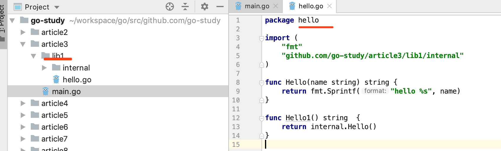
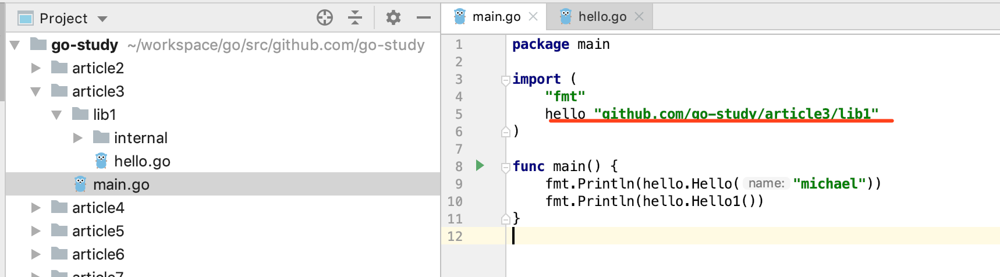

之所以说是坑，是因为不了解其背后的本质，当你站在历史的源头，主动寻求真相的时候，你就会发现一切皆是必然。
GO 环境变量 GOPATH， GOROOT，GOBIN？
GOROOT: 是 GO 的安装目录，例如在我的Mac上面是：GOROOT="/usr/local/go"GOBIN: GO 生成的可执行程序的放置路径；GOPATH: 可以理解为GO语言的工作区，用于放置 GO 的源码文件（source file），安装后的归档文件（archive file，后缀名为：.a），生成的可执行文件（executable file），它可以配置为多个目录，例如：GOPATH="/Users/denglong.fu.o/.go:/Users/denglong.fu.o/workspace/go"具体来说，Go 的源码文件放置在
$GOPATH/src目录下，安装后生成的归档文件放置在$GOPATH/pkg/${平台名称}目录下，可执行文件放置在目录$GOPATH/bin目录下。1
2
3
4
5
6
7
8
9
10
11
12
13
14
15
16
17/Users/denglong.fu.o/workspace/go
├── bin
│ └── example1 // 可执行文件
├── pkg
│ └── darwin_amd64
│ └── github.com
│ └── go-study
│ └── article3
│ └── lib1.a // 归档文件
└── src
└── github.com
└── go-study
├── article3
│ ├── lib1
│ │ ├── hello.go // 包
│ │ └── internal
│ │ └── hello.go // internal 包
Go 代码组织方式？
Go 语言的代码时以 包(package) 为组织方式，在文件系统中，包对应目录，由于目录可以有子目录，相应的包也可有子包。一般情况下，包的名是和目录名称一样的，一个包（目录）下的文件都属于同一个包。我们在引用一个包的中代码之前，首先要导入这个包，例如：
import "github.com/labstack/echo"
一个包的实际导入路径就是从 GOPATH 的 src 目录开始寻找，如果 GOPATH 有多个目录，那就一次从每个目录的 src 目录下开始寻找这个包（文件件/目录）。
go install, go get, go build, go run？
go install ，源码文件是以代码包的形式组织起来的，一个代码包其实就是对应一个目录，安装某个代码包（或者子包）而产生的归档文件是与这个代码包所在的目录同名的，注意不是和包名称相同，因为包名称可以和目录不同，虽然强烈建议将他们设置相同。或者，你可以这样理解，将某个代码包（目录）下的源码文件（.go）打包生成一个以源码文件所在目录名称为名，以 .a 为后缀的压缩文件。为了说明包名和目录名称不同的情况，我举个例子：

这个例子中中，我将 lib1 目录下的 hello.go 包名声明为 hello，并没有按照建议将其声明为：lib1，这个时候生成的归档文档如下：
/Users/denglong.fu.o/workspace/go/pkg/darwin_amd64/github.com/go-study/article3/lib1.a
生成的归档文件的名称同源码 hello.go 所在目录名相同，那么如果我们要导入这个包该如何操作呢？

我们的导入路径没变，是要告诉 Go 编译器到 GOPATH/src/github.com/go-study/article3/lib1 目录下导入们需要的包，但是我们必须重命名导入到当前域中的包名，当然我们也可以这样：
import lib1 "github.com/go-study/article3/lib1"
go build，由于构建，同 go install 一样，都会执行编译，打包操作，但是构建库源码文件如果是库源码文件，构建的结果只会存在与临时目录中，这里构建的意义主要用于检查和验证。但是如果构建的是命令源码文件，那么就会在当前目录下生成可执行文件。这些规则是在不加任何参数的情况下，我们可以通过 go help build 查看更多的构建选项，总结一下，构建库源码文件意义在于检查验证，构建命令源码文件会生成可执行程序。
go build -o hello.a -v -x article3/lib1/hello.go
WORK=/var/folders/rd/8778clcn5cd5p2w9dcj5gz6s1n0wx1/T/go-build377595102
mkdir -p $WORK/b001/
cp /Users/denglong.fu.o/Library/Caches/go-build/45/454b03117dabc5d1f2990d025402be88dfb758b709074c46529e1cc2d6b52747-d hello.a
rm -r $WORK/b001/
go get，会自动从主流的代码托管网站下载并且安装代码包，安装的位置是 GOPATH 包含的第一个工作区的相应目录中。如果存在环境变量 GOBIN ，那么仅包含命令源码文件的代码包会生成可执行文件，并且安装到 GOBIN 所在目录中或者 GOPATH/bin 目录中。
go run, 详见 go help run，主要用于编译和运行 main 包，编译 main 包生成临时的可执行文件并且运行；
命令源码文件，库源码文件，测试源码文件？
命令源码文件属于 main 包，包含无参数无结果的 main 函数，是独立可运行程序的入口，main 函数的运行结束意味着当前程序运行的结束，同一个代码包中不要放多个命令源码文件，命令源码文件也不要跟库源码文件放在同一个代码包。可以通过 go run 直接运行 main 包，或者通过 go build 生成可执行程序，或者通过 go install 在 GOBIN 目录或者工作区 GOPATH/bin 目录生成可执行文件。例如如下代码：
1 | package main |
库源码文件不是能被直接运行的源码文件，它仅用于存放程序实体，这些程序是以可以被其他代码使用。这里的其他代码可以与被使用的程序实体在同一个源码文件内，也可以在其他源码文件，甚至其他的代码包。
Go 程序实体权限访问规则？
Go 的程序实体（函数，常量，变量，结构体，结果口）访问权限规则控制超级简单，即使首字母是否大写，首字母大写以为该程序实体可导出，可以被包外的代码引用，否则只能在包内访问。除此之外，Go 还有一种称之为 模块级私有的权限控制规则，具体规则是 internal 包中的代码中声明的 公开程序实体（首字母大写）仅能被该代码包的的直接父级及其子包中的代码引用。
Go 语言中变量的作用域？
在 Go 语言中，当一个程序实体被创造出来的时候，它的作用域总是被限制在某个代码块中，而这个作用域最大的用处就是对程序实体的访问权限控制。前面提过的三种访问权限规则比较粗粒度：包级私有，模块级私有以及可公开访问的程序实体。通过这种细粒度的权限访问控制，整个代码块就像大圆套小圆，最外层的是全局代码块，当需要查找一个变量的时候，就从当前代码块一直向上查找知道全局代码块，如果没有，编译器就报错了。当内层的变量名称和外层的名称相同时，内层的变量就会在当前代码块中屏蔽掉对外层代码中的变量的访问。
1 | package main |
改程序会输出：
this is block
this is function
类型断言和类型转换？
要判断一个变量是不是某个类型，必须使用类型断言表达式，value, ok := X.(T)，其中 X 必须是接口类型，例如：
var container = []string{"zero", "one", "two"}
container, ok := interface{}(container).([]string)
类型断言表达式可以返回两个值，如果断言成功，那么就会将 X 转换为 T 类型的值并且赋值给 value，否则就是 value 就是 nil。这里的 ok 也可以没有，但是当断言失败的时候机会发生 panic。
由于 Go 语言中，变量的类型在程序运行初期就确定下来了，如果要把一个变量的类型转换为另一个就得使用类型断言表达式：T(x)，在类型断言中，有一些需要注意的地方：
对于整数值，如果源值在目标类型的可表示范围之内就是合法的，否则就会发生高位截断。如下：
var srcInt = int16(-255) dstInt := int8(srcInt)不知道你有没有猜到，dstInt 的值是-1，因为在计算机中，整数是以补码形式存储的，正数的补码使其自身，负数的补码是原码各位取反加一。所以 -255 就是 1111111100000001，截取之后及时1了。
将整数转换为 string 类型值是可行的，但是这个整数值必须可以代表一个有效的 Unicode 码点，否则就成了：
�
别名类型，潜在类型？
别名类型可以通过如下的方式声明：
type MyString = string
这样 MyString 和 string 其实就是同一个类型，他们之间的值可以相互比较相互赋值，系统中 rune 就是 int32 的别名，byte 就是 uint8 的别名。但如果是这样，就大不相同了：
type MyString = string
这相当于声明了一个新的类型，MyString 和 string 类型的变量不能相互肤质，比较，如果要赋值，必须先通过类型转换表达式转换类型，个人觉得这种好像声明好像没什么用。
数组和切片？
数组和切边都属于集合类型，都可以容纳相同类型的多个元素，不同的是，数组类型的值长度是固定的，而切片类型的值长度是不固定的。数组长度和存储元素的类型共同构成了数组的类型，比如 [1]string 和 [2]string 就是两个不同的类型，数组的长度必须在声明的时候就给定。来看几种声明方式：
1 | package main |
程序输出如下：
[0] [0 1] [0 0 0]
[1 2 3] [0 0 0] [] [0 0] true
可以看到，切片类型的字面量中，没有长度，只有类型，切片的长度可以自动随着其中元素数量的增加而增长。切片实际上是对底层数组的一个引用，也正因为如此，s3 为 nil，因为我们只是声明了它的类型，并没有初始化它。数组和切片都是有长度和容量的，对于数组而言，长度和容量相同的，对于切片，长度是当前所含元素的个数，而容量就不一定了，它的是动态可变的。
通道的接收操作和发送操作什么情况下会被阻塞？
对于 缓冲通道，如果通道已满，对它的发送操作就会被阻塞，知道有元素被取走。
对于 非缓冲通道，无论是发送操作还是接收操作，一开始都会被阻塞，知道配对的操作开始执行，由此可见，非缓冲通道使用同步的方式传递数据，数据是直接从发送方复制给接收方的，中间不会用费缓冲通道中转，相比之下，缓冲通道是在用异步的方式传递数据。
通道操作何时会引发 panic？
往未初始化的通道中发送值，或者从中接收值，会导致程序阻塞，如果阻塞了 主 goroutine 就会发生 panic；
关闭已经关闭的通道；
往已经关闭的通道发送值。
为什么说根据通道接收表达式第二个值判断通道是否已经关闭有延迟？
1 | package main |
输出如下：
1 true
2 true
3 true
0 false
通道关闭之后，只要通道中还有值，第二个值就不会是 false，知道将所有的值取完。这里要注意的是，通道关闭之后，也可以从通道中取出值，此时的值通道类型零值。